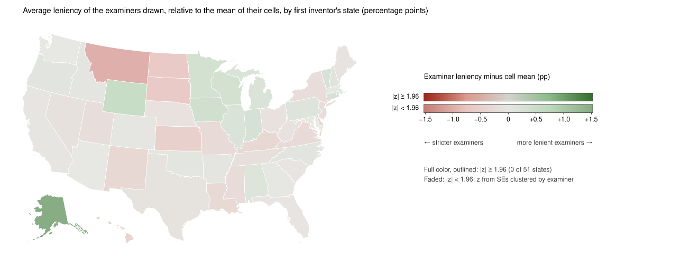
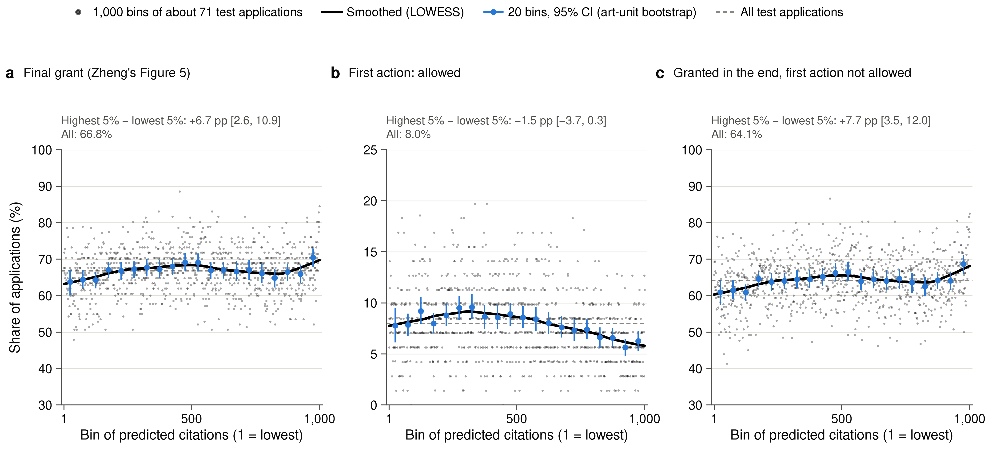
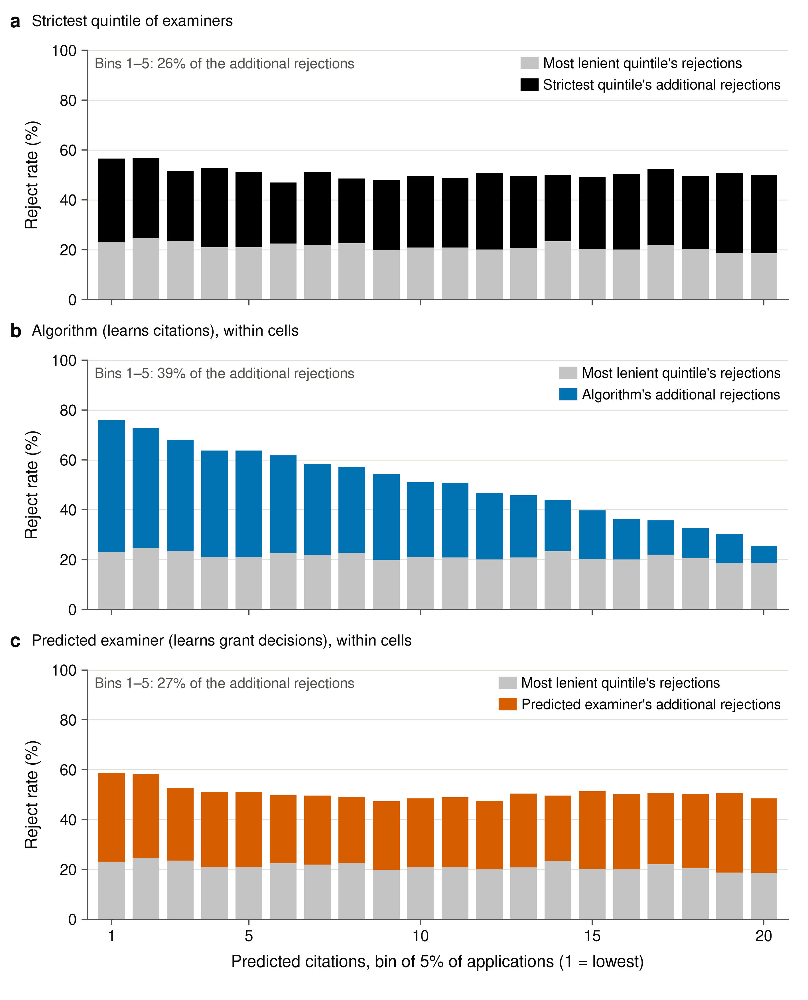
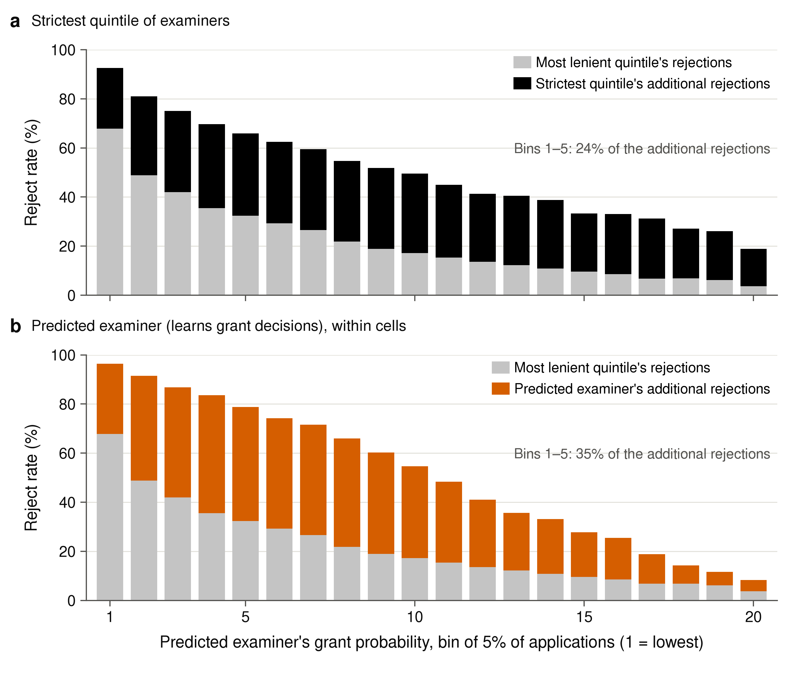
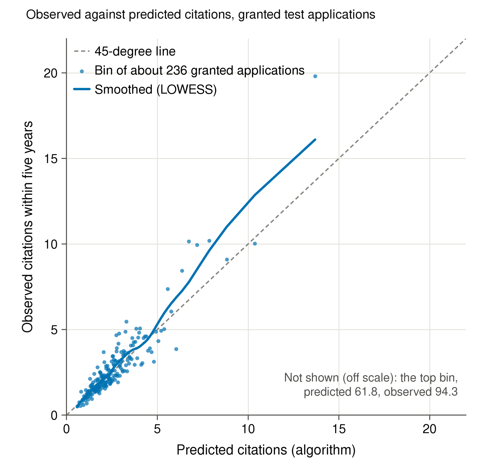
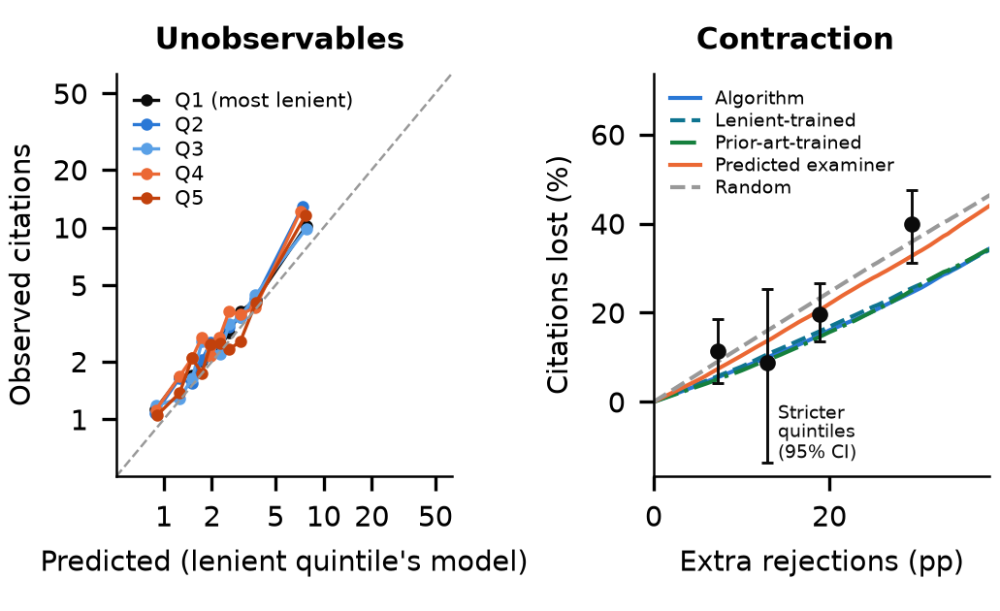
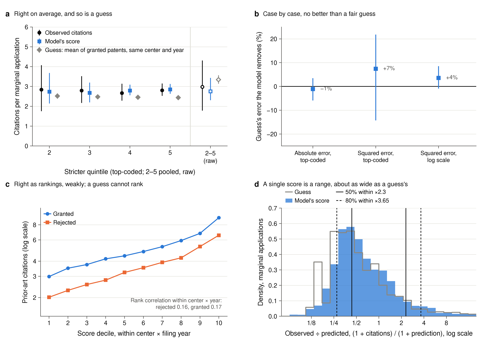
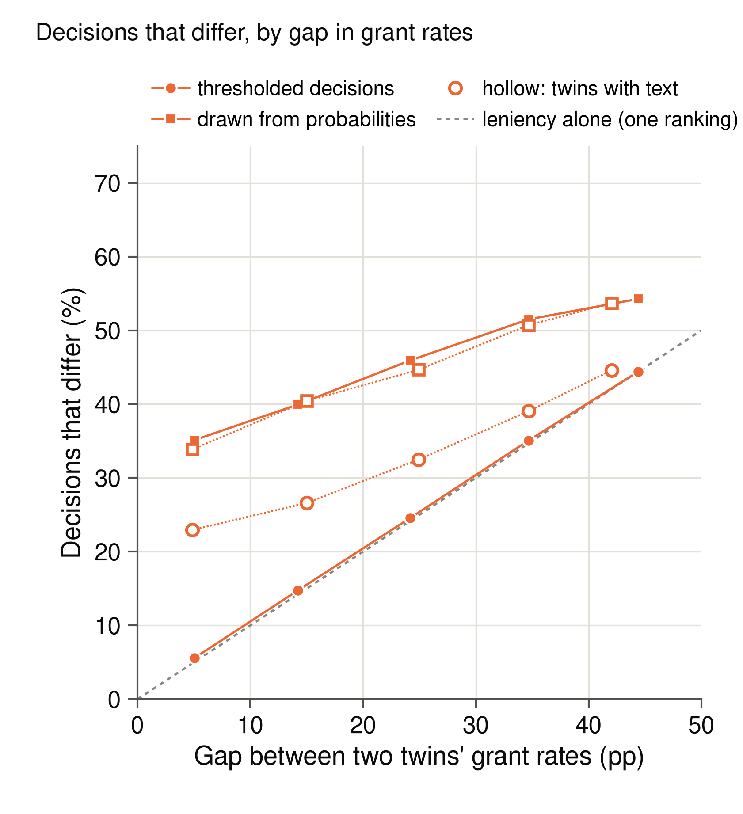
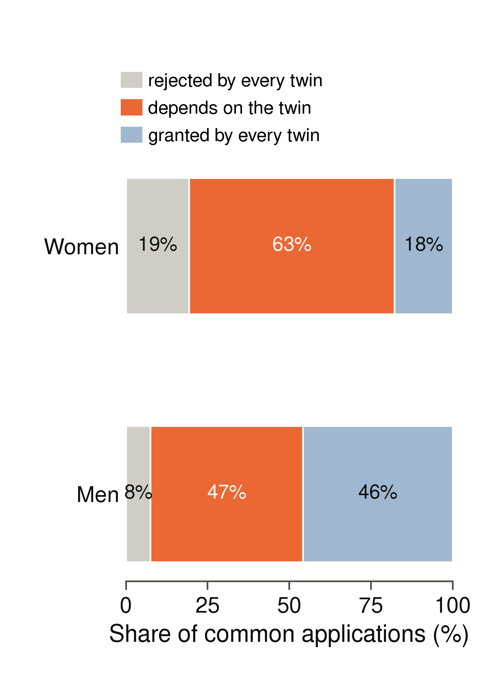

Tables use the final manuscript's rows, columns, and numbering. Their numerical cells are assembled from the recorded analysis sources. Figures below are the exact graphics embedded in the final appendix. See docs/appendix_map.csv for source scripts and figure-panel selections.
The sample: applications filed 2010–2014, by technology center, largest first
| Center | Field | Applications | Examiners | Female (%) | Granted (%) | Citations (granted) | Prior-art cit., granted | Prior-art cit., rejected |
| TC 3700 | Mechanical engineering, manufacturing, medical devices | 90,640 | 1,488 | 9.3 | 61.8 | 5.73 | 2.86 | 1.89 |
| TC 3600 | Transportation, construction, e-commerce, business methods | 80,528 | 1,344 | 7.7 | 56.8 | 2.70 | 2.70 | 2.52 |
| TC 2800 | Semiconductors, electrical and optical systems | 69,834 | 1,667 | 6.3 | 79.8 | 2.73 | 2.71 | 1.95 |
| TC 1700 | Chemical and materials engineering | 47,235 | 1,074 | 10.3 | 62.1 | 1.31 | 1.74 | 1.40 |
| TC 2100 | Computer architecture, software, information security | 41,329 | 1,058 | 8.3 | 73.4 | 2.57 | 4.34 | 3.85 |
| TC 2600 | Communications | 38,574 | 1,179 | 7.4 | 75.5 | 3.35 | 4.90 | 4.00 |
| TC 2400 | Networking, multiplexing, cable, security | 38,116 | 1,175 | 8.2 | 75.1 | 3.03 | 5.65 | 4.37 |
| TC 1600 | Biotechnology, organic chemistry | 37,486 | 725 | 18.1 | 60.8 | 1.27 | 1.83 | 1.60 |
| All centers | 443,742 | 9,524 | 9.0 | 67.1 | 3.11 | 3.24 | 2.40 |
Examiners and assignment cells. Panel A: all utility applications in PatEx filed 2004–2018 (examiner identification); panel B: the main sample (eight centers, filed 2010–2014)
| A. All applications in PatEx, 2004–2018 | |
| Examiner names | 13,647 |
| Applications without an examiner name (%) | 0.18 |
| Applications whose examiner has <20 applications (%) | 0.34 |
| Names in more than one technology center (% of names) | 13.4 |
| B. Main sample (eight centers, filed 2010–2014) | |
| Applications | 443,742 |
| Examiners | 9,524 |
| Docketed to an examiner only once (%) | 19.4 |
| Cells (art unit × year × class) with ≥5 examiners | 4,884 |
| Applications in these cells (%) | 92.4 |
| Examiners per cell (median) | 12 |
| Cell × quintiles with a single examiner (%) | 32.7 |
| Applications in single-examiner quintiles (%) | 13.8 |
| SD of leniency within cells | 0.11 |
| Leniency of strict examiners (mean, %) | 58 |
Cell-by-cell permutation test, the eight centers pooled and TC 3600: cells tested, applications covered, and share of cells with p < 0.05, cells with at least five examiners. Grant index: five groups of equal numbers of examiners; C1’s index (predicted citations): C1’s test and imputation sets, quintiles of equal caseload
| All centers | TC 3600 | |||||
| Cells: art unit × year × | Cells | Covered (%) | p < 0.05 (%) | Cells | Covered (%) | p < 0.05 (%) |
| Index: predicted grant (text score, gender, entity size, inventors) | ||||||
| USPC class | 4,884 | 92.4 | 11.5 | 667 | 89.7 | 9.6 |
| USPC subclass | 10,869 | 28.4 | 5.4 | 1,967 | 31.8 | 5.9 |
| USPC class, residualized leniency | 4,884 | 92.4 | 11.3 | 667 | 89.7 | 11.5 |
| Index: predicted citations (C1; test and imputation sets) | ||||||
| USPC class, Poisson model (main) | 4,154 | 90.3 | 6.8 | 578 | 87.1 | 6.6 |
Balance, the sample, art unit × year × class cells: coefficient on leniency × 0.1 (a 10 pp more lenient examiner), 95% CI clustered by examiner, the eight centers pooled and TC 3600; last column: number of the eight centers whose interval lies below / above zero
| All centers | TC 3600 | Centers, CI <0 / >0 (of 8) | |
| Cells: Art unit × year × USPC class | |||
| Female first inventor | −0.12 [−0.20, −0.03] | 0.04 [−0.16, 0.23] | 1 / 0 |
| Small entity | −0.95 [−1.12, −0.79] | −0.91 [−1.29, −0.52] | 7 / 0 |
| Inventors | 0.015 [0.009, 0.021] | 0.021 [0.009, 0.033] | 0 / 3 |
| Pred. grant score (log-odds) | 0.012 [0.009, 0.015] | 0.009 [0.002, 0.017] | 0 / 4 |
| Evaluators’ predictions (class cells) | |||
| Trained on grant | 0.010 [0.003, 0.017] | 0.001 [0.000, 0.003] | 1 / 1 |
| Trained on grant + names | 0.012 [0.004, 0.019] | 0.001 [0.000, 0.003] | 1 / 1 |
| Trained on first action | −0.002 [−0.004, 0.000] | 0.001 [−0.001, 0.003] | 1 / 0 |
| Trained on citations | −0.004 [−0.026, 0.018] | 0.002 [−0.007, 0.010] | 1 / 1 |
| Trained on citations + names | −0.002 [−0.024, 0.020] | 0.001 [−0.008, 0.009] | 1 / 1 |
| LLM, zero-shot | 0.007 [0.004, 0.010] | 0.000 [0.000, 0.001] | 0 / 2 |
Calibration of a lenient-trained citation model on strict examiners’ grants, the eight centers pooled (last column: centers whose interval lies below / above zero): residual log(1 + citations), strict − lenient, within cells, 95% CI
| All centers | Centers, CI <0 / >0 (of 8) | |
| Strict examiners’ grants | 118,359 | |
| Lenient examiners’ grants | 179,234 | |
| Strict − lenient residual (log points) | −0.018 [−0.025, −0.011] | 3 / 0 |
Monotonicity: coefficient of grant on leniency within cells, by group, 95% CI clustered by examiner, the eight centers pooled; last column: centers whose interval lies below / above zero
| Group | Instrument | All centers | Centers, CI <0 / >0 (of 8) |
| All | Leave-one-out | 0.966 [0.951, 0.981] | 0 / 8 |
| Female | Leave-one-out | 0.938 [0.895, 0.981] | 0 / 8 |
| Male | Leave-one-out | 0.969 [0.954, 0.985] | 0 / 8 |
| Pred. grant, quartile 1 | Leave-one-out | 0.951 [0.923, 0.980] | 0 / 8 |
| Pred. grant, quartile 2 | Leave-one-out | 1.044 [1.018, 1.069] | 0 / 8 |
| Pred. grant, quartile 3 | Leave-one-out | 0.975 [0.948, 1.002] | 0 / 8 |
| Pred. grant, quartile 4 | Leave-one-out | 0.823 [0.795, 0.851] | 0 / 8 |
| Female | Reverse: male | 0.928 [0.884, 0.972] | 0 / 8 |
| Male | Reverse: female | 0.615 [0.596, 0.634] | 0 / 8 |
A test of exclusion and monotonicity, the sample: misfit of examiner means of granted × citations to a cubic in examiners’ grant rates within art units, over its degrees of freedom; the same with citations shuffled among the granted applications of each cell (mean of the draws); permutation p; by the minimum number of the group’s applications per examiner and art unit
| All | Women | Men | |||||
| Minimum applications | Examiners | p | Examiners | Applications used (%) | p | Examiners | p |
| 20 | 7,489 | 0.40 | 36 | 3 | 0.04 | 7,116 | 0.16 |
| 10 | 9,642 | 0.12 | 335 | 15 | 0.20 | 9,407 | 0.36 |
| 5 | 11,384 | 0.58 | 1,664 | 45 | 0.32 | 11,129 | 0.62 |
Exclusion: claims and pendency among granted patents, coefficient on leniency × 0.1 (mean in parentheses), 95% CI, the eight centers pooled and TC 3600; last column: centers whose interval lies below / above zero
| All centers | TC 3600 | Centers, CI <0 / >0 (of 8) | |
| Granted patents | 297,593 | 45,705 | |
| Claims at grant | 0.51 [0.47, 0.56] (18.5) | 0.46 [0.36, 0.56] (17.4) | 0 / 8 |
| Pendency to grant (years) | −0.32 [−0.33, −0.31] (3.2) | −0.31 [−0.34, −0.29] (3.1) | 8 / 0 |
Claims at filing (published application, HUPD) and removed in examination (claims at grant: Table A8), on leniency × 0.1 within art unit × year × class cells; all applications without controls, granted patents with the controls of Table A8; 95% CI clustered by examiner; mean in parentheses; last column: centers whose interval lies below / above zero
| Claims | All centers | TC 3600 | Centers, CI <0 / >0 (of 8) |
| At filing, all applications | 0.17 [0.14, 0.20] (21.2) | 0.18 [0.11, 0.25] (19.7) | 0 / 6 |
| At filing, granted patents | 0.03 [−0.02, 0.07] (21.9) | 0.07 [−0.04, 0.17] (20.3) | 0 / 1 |
| Removed in examination | −0.49 [−0.53, −0.44] (3.4) | −0.39 [−0.49, −0.30] (2.9) | 8 / 0 |
Fewer one-examiner groups, same-period leniency, and top-coded citations. Cells, examiners per group (median), and single-examiner groups: the bar test’s sample of each design. C1: points of citations per application the algorithm loses less than the examiners (test and imputation sets, mean over the stricter quintiles); terciles and halves: the bar test only, since the contraction follows Kleinberg et al.’s quintiles. Bar test: female − male citations of the most lenient group’s extra grants. Top-coded: citations capped at the 99th percentile of granted applications in the same center and filing year. 95% CI from 500 bootstrap draws of art units
| Design | Cells | Examiners per group | Single-examiner groups (%) | C1: algorithm − examiners (pp) | Bar test: female − male, all centers | TC 3600 | TC 2800 |
| Main: five or more examiners, quintiles | 4,884 | 2 | 33 | 6.2 [−2.4, 13.9] | −0.11 [−2.29, 2.76] | 3.76 [1.12, 6.83] | −4.56 [−9.05, −0.42] |
| Ten or more examiners | 3,165 | 3 | 12 | 8.2 [−1.7, 16.6] | 0.01 [−2.18, 3.63] | 4.04 [1.19, 7.76] | −4.97 [−10.04, −1.09] |
| Fifteen or more examiners | 1,524 | 4 | 4 | 12.2 [5.0, 18.6] | 0.03 [−2.94, 4.36] | 4.20 [0.82, 8.62] | −4.14 [−10.17, 0.76] |
| Terciles | 4,884 | 4 | 9 | 1.01 [−0.85, 3.81] | 3.17 [0.75, 6.69] | 1.06 [−2.34, 4.78] | |
| Halves | 4,884 | 6 | 1 | 0.63 [−1.13, 3.19] | 2.05 [0.02, 4.55] | −0.04 [−3.09, 3.29] | |
| Same-period leniency | 4,874 | 2 | 33 | 7.3 [2.1, 13.0] | 0.41 [−1.20, 2.23] | 3.77 [1.54, 6.36] | −0.38 [−4.49, 4.16] |
| Citations top-coded at the 99th percentile | 4,884 | 2 | 33 | −0.81 [−1.59, 0.04] | 1.63 [0.45, 2.98] | −1.53 [−3.42, 0.61] |
Has the language model seen the applications? AUC (grant) of the zero-shot LLM minus that of the text model, in the more and the less familiar half of 30,000 applications (split at the median within each center), and the difference between the halves with a bootstrap 95% CI
| AUC of the LLM − AUC of the text model | ||||
| More familiar half | Less familiar half | Difference | 95% CI | |
| TC 3600 | −0.139 | −0.120 | −0.019 | [−0.039, −0.002] |
| TC 1600 | −0.047 | −0.039 | −0.007 | [−0.025, 0.010] |
C1, their Table II in both tails: test applications in the lowest and highest 1–25% of each model’s predictions (the boosted model and its Poisson-regression benchmark, same inputs and objective), the overlap of the two sets, and citations of the granted applications flagged by only one model, pooled and with both models flagging within each center × filing year; top-coded at the 99th percentile of granted applications of the same center and year; 95% CI from 1,000 bootstrap draws of art units
| Citations, granted applications flagged by one model only: boosted / linear | Boosted − linear | |||||
| Share of test applications | Overlap (%) | Mean | Median | Mean, top-coded | Mean | Mean, top-coded |
| Lowest predicted (the tail a rule rejects from; fewer is better) | ||||||
| 1% | 22 | 0.61 / 0.76 | 0 / 0 | 0.61 / 0.76 | −0.16 [−0.45, 0.10] | −0.16 [−0.45, 0.10] |
| 5% | 43 | 0.87 / 1.31 | 0 / 0 | 0.83 / 1.20 | −0.44 [−0.74, −0.18] | −0.37 [−0.57, −0.17] |
| 10% | 53 | 1.07 / 1.49 | 0 / 0 | 1.01 / 1.38 | −0.42 [−0.64, −0.19] | −0.37 [−0.55, −0.20] |
| 25% | 64 | 1.57 / 2.52 | 0 / 1 | 1.35 / 2.05 | −0.95 [−1.40, −0.55] | −0.69 [−0.88, −0.52] |
| Highest predicted (more is better) | ||||||
| 1% | 55 | 10.45 / 17.99 | 2 / 1 | 7.38 / 6.82 | −7.53 [−20.67, 2.35] | 0.56 [−2.06, 2.85] |
| 5% | 51 | 7.34 / 4.37 | 1 / 1 | 5.10 / 3.46 | 2.97 [1.16, 5.04] | 1.64 [0.86, 2.39] |
| 10% | 53 | 5.04 / 3.51 | 1 / 1 | 4.06 / 3.05 | 1.53 [0.79, 2.38] | 1.01 [0.53, 1.45] |
| 25% | 61 | 4.20 / 2.61 | 1 / 1 | 3.41 / 2.31 | 1.59 [1.08, 2.12] | 1.10 [0.81, 1.37] |
| Lowest predicted within each center × filing year | ||||||
| 1% | 18 | 1.44 / 1.19 | 0 / 0 | 1.19 / 1.19 | 0.25 [−0.29, 1.15] | −0.00 [−0.37, 0.39] |
| 5% | 29 | 1.36 / 1.76 | 0 / 0 | 1.25 / 1.64 | −0.40 [−0.74, −0.07] | −0.40 [−0.62, −0.17] |
| 10% | 38 | 1.59 / 2.39 | 0 / 0 | 1.41 / 1.91 | −0.80 [−1.33, −0.31] | −0.50 [−0.74, −0.27] |
| 25% | 54 | 1.72 / 2.53 | 0 / 1 | 1.61 / 2.14 | −0.81 [−1.14, −0.51] | −0.53 [−0.72, −0.36] |
| Highest predicted within each center × filing year | ||||||
| 1% | 26 | 21.39 / 12.46 | 1 / 1 | 7.68 / 5.12 | 8.92 [−4.05, 25.12] | 2.55 [−0.24, 5.96] |
| 5% | 36 | 5.60 / 5.18 | 1 / 1 | 4.06 / 3.28 | 0.42 [−1.75, 2.35] | 0.79 [0.17, 1.40] |
| 10% | 43 | 5.13 / 3.43 | 1 / 1 | 3.74 / 2.86 | 1.71 [0.87, 2.61] | 0.88 [0.46, 1.32] |
| 25% | 57 | 3.74 / 2.44 | 1 / 1 | 3.02 / 2.15 | 1.29 [0.85, 1.77] | 0.87 [0.63, 1.12] |
The counterfactual scores at the margin (applications granted by the most lenient quintile and rejected by a stricter one, the four stricter quintiles pooled; test and imputation sets). The guess: mean citations of granted training applications of the same center and filing year (in the top-coded rows, the mean of their top-coded citations). Top-coded: at the 99th percentile of granted applications of the same center and year. Factors on a grid of 0.05. Prior-art citations: later applications citing the same marginal applications, as rejected by the stricter quintile and as granted by the most lenient one (scripts 06c, 35). 95% CI from 500 bootstrap draws of art units
| Estimate | 95% CI | |
| Levels | ||
| Mean citations of the marginal applications | 2.98 | [1.78, 4.31] |
| Mean score of the same applications | 2.75 | [2.31, 3.44] |
| computed from the rejected side (check) | 2.82 | [2.63, 3.02] |
| Score − citations | −0.22 | [−1.16, 0.72] |
| Mean guess | 3.34 | [3.14, 3.57] |
| Error of a single score, citations top-coded | ||
| Mean absolute error: score | 3.18 | [2.88, 3.53] |
| guess | 3.14 | [2.82, 3.58] |
| share of the guess’s error removed (%) | −1 | [−6, 3] |
| Range around a prediction: (1 + citations) within a factor of (1 + prediction) | ||
| Factor that holds 50% of marginal applications: score | 2.3 | [2.25, 2.4] |
| guess | 2.4 | [2.35, 2.6] |
| Factor that holds 80% of marginal applications: score | 3.65 | [3.5, 3.85] |
| guess | 4.25 | [4.05, 4.4] |
| Prior-art citations of the same marginal applications (observed) | ||
| as rejected (stricter quintile) | 2.92 | [2.64, 3.21] |
| as granted (most lenient quintile) | 4.38 | [3.86, 4.94] |
| ratio, granted to rejected | 1.50 | [1.31, 1.72] |
C1 (their Tables III and VIII): contraction of the most lenient quintile’s grants (test and imputation sets; held-out sample below). A rule rejects, within each cell, as many more applications as the stricter quintile, in order of its prediction; 95% CI from 500 bootstrap draws of art units
| Stricter quintile | Extra rejections (pp) | Examiners | Algorithm | Lenient-trained | Prior-art-trained | Predicted examiner | Random | |
| Change in citations per application relative to the most lenient quintile (%) | ||||||||
| 2 | 7.3 | −11.3 | −5.6 | −5.8 | −5.1 | −7.4 | −9.1 | |
| 3 | 12.9 | −8.8 | −10.0 | −10.7 | −9.4 | −13.7 | −16.0 | |
| 4 | 18.9 | −19.8 | −15.0 | −15.8 | −14.6 | −20.6 | −23.2 | |
| 5 | 29.4 | −39.9 | −24.6 | −25.5 | −25.1 | −32.8 | −36.0 | |
| Mean | 17.1 | −20.0 | −13.8 | −14.5 | −13.5 | −18.6 | −21.1 | |
| Rule − examiners (pp, 95% CI) | ||||||||
| Rule − examiners, mean | 6.2 [−2.4, 13.9] | 5.5 [−3.3, 13.5] | 6.4 [−2.4, 14.4] | 1.4 [−8.1, 9.6] | −1.1 [−10.7, 7.0] | |||
| Held-out sample: rule − examiners | 10.2 [−3.9, 23.7] | 8.4 [−5.9, 22.6] | 9.2 [−4.8, 22.8] | 4.3 [−10.1, 19.1] |
C1 (their Table IV), test set: change in citations per application (%) when all applications are reranked by the rule and granted at the examiners’ rate. Rejected applications receive the imputation model’s prediction up to the most lenient quintile’s grant rate and the prediction divided by α beyond it; 95% CI Every column reranks the same applications and rescores the same grants, so α changes only the imputed values of rejected applications
| Rule | α=1 | α=1.5 | α=2 | α=∞ |
| Algorithm | 19.9 [16.9, 23.2] | 12.8 [10.8, 15.1] | 9.2 [7.6, 11.0] | −1.4 [−3.0, −0.3] |
| Lenient-trained | 17.6 [14.9, 21.0] | 10.7 [8.8, 13.1] | 7.2 [5.5, 9.2] | −3.2 [−5.1, −1.6] |
| Prior-art-trained | 9.6 [2.5, 15.7] | 3.0 [−3.0, 8.1] | −0.2 [−5.8, 4.4] | −10.0 [−14.3, −6.7] |
| Predicted examiner | 4.2 [2.5, 5.9] | −0.1 [−1.9, 1.7] | −2.3 [−4.1, −0.4] | −8.8 [−11.0, −6.4] |
C1 (their Table V): contraction judged on other outcomes. Change in the outcome per application relative to the most lenient quintile at the examiners’ extra rejections (mean over the stricter quintiles, %), and how much better each rule does than the examiners (pp, 95% CI): fewer lost, except for granted patents that nobody cites, where more removed is better
| Outcome | Examiners (%) | Algorithm (%) | Algorithm better by (pp) | Predicted examiner better by (pp) |
| Citations | −20.0 | −13.8 | 6.2 [−2.4, 13.9] | 1.4 [−8.1, 9.6] |
| Granted but never cited (fewer is better) | −21.6 | −24.2 | 2.6 [1.3, 3.8] | −0.1 [−1.3, 1.2] |
| Renewed at four years | −22.3 | −21.3 | 1.0 [0.5, 1.5] | 1.7 [1.2, 2.1] |
| Top-decile citations | −24.1 | −15.6 | 8.5 [5.5, 11.4] | 3.4 [0.3, 6.7] |
| Prior-art citations of granted applications | −24.8 | −16.8 | 8.0 [5.4, 10.6] | 2.1 [−0.4, 4.9] |
Extension A, test set: reranking judged on prior-art citations, an outcome observed for rejected applications too. Change in prior-art citations per application (%) with the rejected applications’ values imputed as in Table A15 or observed; 95% CI
| Rule | Imputed, α=1 | Imputed, α=1.5 | Imputed, α=∞ | Observed |
| Algorithm (citations) | 26.0 [23.5, 28.9] | 17.7 [15.8, 19.9] | 1.2 [0.0, 2.3] | 16.0 [13.7, 18.1] |
| Algorithm (prior art, all applications) | 36.4 [33.6, 39.8] | 27.4 [25.3, 30.0] | 9.4 [8.4, 10.4] | 25.8 [23.4, 28.5] |
Counterfactual scores of rejected applications (out of sample; held-out sample excluded): correlation with citations among granted applications, rank correlation with prior-art citations among granted and among rejected applications, means, and where rejected applications fall among granted ones of the same center and year; the within rows give the rank correlations within center × filing year and within art unit × filing year (200 bootstrap draws of art units; script 43)
| TC | Score | Corr., citations (granted) | Spearman, prior art (granted) | Spearman, prior art (rejected) | Mean, granted | Mean, rejected | Rejected above granted median (%) | Rejected in granted top quarter (%) |
| All | Text | 0.29 | 0.29 | 0.27 | 2.95 | 2.71 | 51 | 25 |
| All | Text, within center × year | – | 0.166 | 0.162 | – | – | – | – |
| All | Text, within art unit × year | – | 0.115 | 0.106 | – | – | – | – |
C1, how accurate and for whom (test and imputation sets). Citations lost at the stricter quintiles’ extra rejection rates, and how many fewer points each rule loses than the examiners (95% CI); women’s share of each rule’s extra rejections; female − male grant rate within art unit × year when the rule grants at the examiners’ rate; and the outcome test: female − male citations of the applications at the margin, the last 5 percentage points of each rule’s rejections (for the examiners, the most lenient quintile’s extra grants; Table A27 gives it on the full sample). 500 bootstrap draws of art units
| Citations lost (%) | Rule − examiners (pp) | Women among extra rejections (%) | Female − male grant rate, reranked (pp) | Outcome test: female − male citations | |
| Examiners | 20.0 | 9.5 [7.3, 11.6] | −3.3 [−4.6, −2.1] | 0.31 [−2.74, 4.61] | |
| Random rejections | 21.1 | −1.1 [−10.7, 7.0] | 8.5 [7.9, 9.0] | – | – |
| Algorithm (trained on citations) | 13.8 | 6.2 [−2.4, 13.9] | 8.7 [7.9, 9.5] | −0.3 [−1.2, 0.7] | 0.56 [−0.55, 2.01] |
| Predicted examiner (trained on grants) | 18.6 | 1.4 [−8.1, 9.6] | 9.0 [8.3, 9.9] | −4.0 [−5.1, −2.9] | −1.09 [−1.90, −0.38] |
| Algorithm, equal grant rates for women and men | 13.9 | 6.1 [−2.8, 14.1] | 8.5 [7.9, 9.0] | 5.5 [4.6, 6.5] | 0.34 [−0.33, 1.34] |
C1 by gender of the first inventor (their Table VI): contraction with constraints on the algorithm, 95% CI
| Rule | Citations per application (%) | Female − other grant rate (pp) | Female share of (extra) rejections (%) |
| Contraction (Table VI), mean over the stricter quintiles | |||
| Stricter examiners | −20.0 | – | 9.5 [7.3, 11.6] |
| Algorithm | −13.8 | – | 8.7 [7.9, 9.5] |
| Algorithm, examiners’ female share | −13.2 | – | 9.2 [9.2, 9.2] |
| Algorithm, equal rates for women and men | −13.9 | – | 8.5 [7.9, 9.0] |
| Random | −21.1 | – | 8.5 [7.9, 9.0] |
TC 1600 and TC 1700: female − male gaps within art unit × year and, in addition, within USPC subclass, in decisions (each evaluator granting the examiners’ share of applications in its center) and in outcomes; 95% CI clustered by examiner. Script 50 also reports the comparison within USPC class
| TC 1600 | TC 1700 | |||
| Female − male, within | art unit × year | + subclass | art unit × year | + subclass |
| Decisions at the examiners’ grant rate (pp) | ||||
| Examiners: grants | −2.1 [−3.5, −0.7] | −1.3 [−2.6, 0.1] | −0.9 [−2.4, 0.6] | −1.0 [−2.7, 0.6] |
| Evaluator trained on grants: decisions | −1.8 [−3.1, −0.6] | −0.6 [−1.9, 0.7] | −1.8 [−3.3, −0.2] | −1.5 [−3.2, 0.2] |
| Evaluator trained on citations: decisions | −3.9 [−5.2, −2.5] | −2.8 [−4.1, −1.5] | −1.0 [−2.6, 0.6] | 0.2 [−1.5, 1.8] |
| Qwen3-8B, zero-shot: decisions | −0.3 [−1.6, 1.0] | −0.1 [−1.5, 1.3] | 2.1 [0.7, 3.6] | 0.2 [−1.4, 1.8] |
| Outcomes (% for logs, pp for renewal) | ||||
| Log citations, granted patents | −5.0 [−7.5, −2.5] | −4.0 [−6.7, −1.3] | −1.4 [−4.0, 1.3] | −2.4 [−5.7, 0.8] |
| Log prior-art citations, published applications | −3.5 [−5.6, −1.4] | −3.2 [−5.5, −1.0] | −1.1 [−3.1, 0.9] | −0.8 [−3.2, 1.5] |
| Renewed at four years, granted patents | −1.7 [−3.0, −0.3] | −1.2 [−2.6, 0.2] | −0.1 [−1.5, 1.3] | −0.8 [−2.5, 0.8] |
Gender gap in grant decisions (female − male, pp, within art unit × year), for the examiners and for each evaluator granting the examiners’ share of applications in its center; all eight centers, then each center; 95% CI below each estimate
| Center | Applications | Female (%) | Examiners | Trained on grant | Trained on citations | LLM, zero-shot | Trained on first action |
| All centers | 443,742 | 9.0 | −4.0 | −7.0 | −1.1 | −4.1 | −5.6 |
| [−4.5, −3.4] | [−7.6, −6.4] | [−1.6, −0.6] | [−4.6, −3.5] | [−6.1, −5.0] | |||
| TC 3700 | 90,640 | 9.3 | −9.9 | −16.6 | −3.8 | −12.7 | −12.6 |
| [−11.3, −8.4] | [−18.0, −15.3] | [−5.0, −2.5] | [−14.1, −11.3] | [−13.9, −11.3] | |||
| TC 3600 | 80,528 | 7.7 | −7.5 | −14.1 | 1.3 | −8.1 | −9.9 |
| [−8.9, −6.1] | [−15.7, −12.5] | [0.0, 2.6] | [−9.6, −6.6] | [−11.3, −8.6] | |||
| TC 2800 | 69,834 | 6.3 | −2.6 | −3.6 | −0.8 | −0.9 | −3.4 |
| [−3.9, −1.2] | [−4.9, −2.2] | [−2.0, 0.5] | [−2.2, 0.4] | [−4.7, −2.1] | |||
| TC 2600 | 38,574 | 7.4 | −1.6 | −4.3 | 1.2 | −3.1 | −2.0 |
| [−3.2, 0.1] | [−6.0, −2.6] | [−0.4, 2.8] | [−4.8, −1.3] | [−3.6, −0.5] | |||
| TC 2400 | 38,116 | 8.2 | 0.5 | 0.6 | 2.9 | −0.6 | −0.7 |
| [−1.1, 2.2] | [−0.9, 2.0] | [1.3, 4.5] | [−2.1, 1.0] | [−2.3, 1.0] | |||
| TC 2100 | 41,329 | 8.3 | 0.7 | −1.9 | −0.3 | 0.1 | −2.4 |
| [−1.0, 2.4] | [−3.4, −0.4] | [−1.9, 1.2] | [−1.4, 1.7] | [−3.8, −1.0] | |||
| TC 1700 | 47,235 | 10.3 | −0.9 | −1.8 | −1.0 | 2.1 | −4.6 |
| [−2.4, 0.6] | [−3.3, −0.2] | [−2.6, 0.6] | [0.7, 3.6] | [−6.1, −3.1] | |||
| TC 1600 | 37,486 | 18.1 | −2.1 | −1.8 | −3.9 | −0.3 | −0.3 |
| [−3.5, −0.7] | [−3.1, −0.6] | [−5.2, −2.5] | [−1.6, 1.0] | [−1.6, 0.9] |
Every evaluator, all eight centers and TC 3600: gender gap in grant decisions (female − male, pp; in parentheses, times the examiners’ gap), 95% CI; the same run as Table A22. The fine-tuned LLM exists only in the pilot centers
| Evaluator | All centers (pp) | × examiners | TC 3600 (pp) | × examiners |
| Examiners and text-embedding evaluators | ||||
| Examiners | −4.0 [−4.5, −3.4] | 1.00 | −7.5 [−8.9, −6.1] | 1.00 |
| Trained on grant | −7.0 [−7.6, −6.4] | 1.77 | −14.1 [−15.7, −12.5] | 1.88 |
| Trained on grant + names | −7.3 [−7.9, −6.7] | 1.84 | −14.2 [−15.8, −12.6] | 1.89 |
| Trained on first action | −5.6 [−6.1, −5.0] | 1.41 | −9.9 [−11.3, −8.6] | 1.33 |
| Trained on citations | −1.1 [−1.6, −0.6] | 0.27 | 1.3 [0.0, 2.6] | −0.18 |
| Trained on citations + names | −1.9 [−2.4, −1.3] | 0.47 | −1.1 [−2.4, 0.2] | 0.15 |
| Qwen3-8B | ||||
| LLM, zero-shot | −4.1 [−4.6, −3.5] | 1.02 | −8.1 [−9.6, −6.6] | 1.09 |
| LLM fine-tuned on grant | – | – | −14.6 [−16.2, −12.9] | 1.95 |
| LLM fine-tuned on citations | – | – | 1.2 [−0.1, 2.6] | −0.16 |
Decisions against probabilities: gaps in grant decisions at the examiners’ grant rate and in mean predicted grant probability (pp), for the grant-trained evaluator and the zero-shot LLM, by gender and by race and ethnicity; 95% CI below each estimate
| Comparison | Examiners | Grant-trained: decisions | Grant-trained: probability | LLM: decisions | LLM: probability |
| All eight centers | |||||
| Female − male | −4.0 | −7.0 | −3.2 | −4.1 | −1.1 |
| [−4.5, −3.4] | [−7.6, −6.4] | [−3.4, −2.9] | [−4.6, −3.5] | [−1.2, −1.0] | |
| Hispanic − White | −3.1 | −3.7 | −1.5 | −4.2 | −1.3 |
| [−4.1, −2.2] | [−4.6, −2.8] | [−1.8, −1.2] | [−5.2, −3.3] | [−1.5, −1.0] | |
| Asian − White | 1.0 | 3.6 | 1.4 | 3.6 | 0.9 |
| [0.6, 1.4] | [3.2, 4.0] | [1.3, 1.5] | [3.1, 4.0] | [0.8, 1.0] | |
| Black − White | −4.7 | −6.4 | −3.3 | −8.7 | −2.4 |
| [−7.0, −2.5] | [−8.5, −4.3] | [−4.1, −2.6] | [−10.9, −6.4] | [−2.9, −1.9] | |
| TC 3600 | |||||
| Female − male | −7.5 | −14.1 | −6.5 | −8.1 | −2.6 |
| [−8.9, −6.1] | [−15.7, −12.5] | [−7.2, −5.8] | [−9.6, −6.6] | [−3.0, −2.2] | |
| Hispanic − White | −5.1 | −5.7 | −2.1 | −6.5 | −2.0 |
| [−7.2, −3.0] | [−7.6, −3.9] | [−2.9, −1.4] | [−8.8, −4.3] | [−2.6, −1.3] | |
| Asian − White | 1.6 | 1.7 | 1.6 | 4.4 | 1.5 |
| [0.4, 2.8] | [0.9, 2.6] | [1.2, 2.1] | [3.1, 5.7] | [1.1, 1.9] | |
| Black − White | −5.2 | −8.5 | −4.7 | −13.3 | −4.6 |
| [−10.5, 0.0] | [−12.9, −4.1] | [−6.6, −2.9] | [−18.5, −8.1] | [−6.0, −3.1] |
TC 3600 and TC 1600: fine-tuned Qwen3-8B (LoRA): fit and gender gap in decisions (pp; in parentheses, times the examiners’ gap) This is a separate run from Tables A22 and A23, cross-fitted in two halves of examiners, so its embedding rows differ slightly from those tables (−4.1 against −3.9 in TC 1600; 1.89 against 1.88 in TC 3600); for the citation-trained models the AUC for grant is not a measure of fit
| TC | Evaluator | AUC, grant | Corr., log citations | Gender gap (pp) |
| 3600 | LLM fine-tuned: grant | 0.781 | 0.012 | −14.6 (1.95×) |
| 3600 | LLM fine-tuned: citations | 0.537 | 0.216 | 1.2 (−0.16×) |
| 3600 | Embedding: grant | 0.783 | 0.031 | −14.1 (1.89×) |
| 3600 | Embedding: citations | 0.548 | 0.290 | 1.3 (−0.17×) |
| 1600 | LLM fine-tuned: grant | 0.682 | 0.023 | −2.7 (1.27×) |
| 1600 | LLM fine-tuned: citations | 0.491 | 0.145 | −2.1 (1.02×) |
| 1600 | Embedding: grant | 0.688 | 0.015 | −1.7 (0.82×) |
| 1600 | Embedding: citations | 0.516 | 0.243 | −4.1 (1.98×) |
Evaluators trained on earlier filings: gender gap in grant decisions on applications filed 2013–2014 (female − male, pp), cross-fitted evaluators against evaluators trained on 2010–2012, all eight centers and TC 3600; 95% CI below each estimate
| All centers: cross-fitted | All centers: 2010–12 → 2013–14 | TC 3600: cross-fitted | TC 3600: 2010–12 → 2013–14 | |
| Examiners (actual decisions) | −4.0 | −6.9 | ||
| [−4.7, −3.2] | [−8.8, −5.1] | |||
| Trained on grant | −6.9 | −6.9 | −12.7 | −12.6 |
| [−7.6, −6.1] | [−7.7, −6.1] | [−14.5, −11.0] | [−14.4, −10.7] | |
| Trained on first action | −5.4 | −5.7 | −8.7 | −9.0 |
| [−6.1, −4.7] | [−6.4, −5.0] | [−10.4, −7.0] | [−10.6, −7.3] | |
| Trained on citations | −0.5 | −0.4 | 1.6 | 2.1 |
| [−1.2, 0.2] | [−1.1, 0.4] | [−0.3, 3.5] | [0.2, 4.0] |
Who faces a higher bar: citations of the most lenient quintile’s extra grants (the applications stricter examiners reject), by gender of the first inventor, applications filed 2010–2014, cells with at least five examiners; 95% CI from 500 bootstrap draws of art units
| Sample | Applications | All | Female | Male | Female − male |
| By center (all cells) | |||||
| TC 1600 | 34,454 | 2.10 [1.24, 2.95] | 1.51 [0.51, 2.63] | 2.34 [1.40, 3.28] | −0.83 [−1.93, 0.49] |
| TC 1700 | 38,817 | 1.72 [0.79, 3.16] | 0.54 [−0.82, 1.97] | 1.79 [0.84, 3.25] | −1.24 [−3.10, 0.38] |
| TC 2100 | 40,002 | 3.11 [2.13, 4.11] | 3.07 [0.40, 5.41] | 3.16 [2.05, 4.17] | −0.10 [−2.75, 2.34] |
| TC 2400 | 36,962 | 3.30 [1.53, 4.86] | 0.78 [−3.65, 4.09] | 3.48 [1.46, 5.29] | −2.70 [−7.26, 0.95] |
| TC 2600 | 36,482 | 4.58 [3.08, 6.16] | 1.31 [−3.73, 5.53] | 4.83 [3.36, 6.46] | −3.52 [−8.71, 0.81] |
| TC 2800 | 66,366 | 3.41 [1.79, 4.95] | −1.00 [−4.34, 2.28] | 3.56 [1.74, 5.17] | −4.56 [−9.05, −0.42] |
| TC 3600 | 72,252 | 2.68 [1.81, 3.55] | 6.13 [3.71, 9.22] | 2.37 [1.49, 3.29] | 3.76 [1.12, 6.83] |
| TC 3700 | 84,804 | 3.94 [0.35, 7.35] | 6.01 [0.81, 15.20] | 3.83 [−0.58, 8.07] | 2.18 [−5.70, 14.14] |
| All centers | 410,139 | 3.18 [2.29, 4.14] | 3.10 [1.47, 5.18] | 3.20 [2.13, 4.37] | −0.11 [−2.29, 2.76] |
| Alternative designs | |||||
| All centers, cells that pass the permutation test | 350,724 | 3.14 [2.09, 4.20] | 3.10 [1.24, 5.55] | 3.20 [1.92, 4.44] | −0.10 [−2.57, 3.31] |
| TC 3600, cells that pass the permutation test | 63,764 | 2.61 [1.76, 3.53] | 6.59 [3.97, 10.00] | 2.29 [1.42, 3.32] | 4.30 [1.51, 7.87] |
| All centers, subclass cells | 126,038 | 4.15 [2.60, 5.72] | 6.89 [0.53, 21.64] | 4.39 [2.14, 6.56] | 2.50 [−4.77, 18.95] |
| TC 3600, subclass cells | 25,571 | 3.23 [1.80, 4.92] | 4.35 [1.35, 8.51] | 3.07 [1.57, 4.75] | 1.28 [−2.04, 5.73] |
| All centers, without classes 705, 435, 436, 536 | 378,491 | 3.26 [2.31, 4.17] | 3.15 [1.34, 5.98] | 3.28 [2.14, 4.33] | −0.13 [−2.41, 3.40] |
| TC 3600, without classes 705, 435, 436, 536 | 49,447 | 2.71 [1.41, 4.22] | 10.18 [6.16, 18.78] | 2.22 [0.74, 3.67] | 7.96 [3.84, 16.32] |
Applications filed 2004–2009, all eight centers and TC 3600: the gender gap in grants (female − male, art unit × year fixed effects, errors clustered by examiner) and the citations of the most lenient quintile’s extra grants, all applications and female − male; 95% CI. Built with the sample rules of the human record (script 24), which extend to 2004–2009; the 2010–2014 cohort is in Table A27
| Center | Cohort | Applications | Grant gap (pp) | Extra grants: citations | Female − male |
| TC 3600 | 2004–2009 | 55,866 | −9.2 [−11.0, −7.4] | 3.53 [1.71, 7.06] | −0.49 [−4.57, 2.63] |
| All centers | 2004–2009 | 346,079 | −4.2 [−4.8, −3.5] | 4.11 [3.48, 4.84] | −0.72 [−2.03, 0.79] |
By race and ethnicity of the first inventor (from the surname), against White first inventors, the examiners’ grant gap and the gap in each evaluator’s decisions (pp, within art unit × year), and the outcome test (citations of the applications at the bar, group − White; 500 bootstrap draws of art units); 95% CI below each estimate. n.a.: too few cells contribute to the outcome test for Black inventors (see text)
| Group | Applications | Examiners (pp) | Trained on grant | Trained on citations | LLM, zero-shot | Outcome test (citations) |
| Hispanic | 9,671 | −3.1 | −3.7 | 2.1 | −4.2 | 2.90 |
| [−4.1, −2.2] | [−4.6, −2.8] | [1.2, 3.0] | [−5.2, −3.3] | [−3.98, 11.10] | ||
| Asian | 56,626 | 1.0 | 3.6 | 1.3 | 3.6 | 0.51 |
| [0.6, 1.4] | [3.2, 4.0] | [0.8, 1.7] | [3.1, 4.0] | [−1.56, 2.84] | ||
| Black | 1,735 | −4.7 | −6.4 | 1.1 | −8.7 | n.a. |
| [−7.0, −2.5] | [−8.5, −4.3] | [−1.1, 3.2] | [−10.9, −6.4] | |||
| White (reference) | 272,685 | 3.33 | ||||
| [2.23, 4.42] |
AI twins, TC 3600, the 20 examiners pooled: mean examiner leniency and the twins’ grant rate on the common applications, the twins’ held-out AUC, the examiners’ own female − male grant gap (within art unit × year), and the twins’ gap in predicted probabilities and in decisions (pp)
| Examiners’ leniency (%) | Twins’ grant rate (%) | Twins’ AUC | Examiners’ gap | Twins’ gap, probabilities | Twins’ gap, decisions | |
| All | 74 | 68 | 0.69 | −9.1 | −4.1 | −14.5 |
Does the decision depend on the twin? Probability (%) that the decision on a common application changes when it is reassigned from one twin to another chosen at random, with thresholded decisions, by gender of the first inventor (95% CI clustered by the examiner who decided the application)
| All (3,972) | Female (315) | Male (3,657) | Female − male [95% CI] | |
| Thresholded decisions: each twin grants its top share | ||||
| Leniency alone, thresholds at the twins’ grant rates | 16.6 | 20.6 | 16.3 | 4.3 [0.9, 7.7] |
| Leniency-only twins | 17.1 | 20.9 | 16.8 | 4.1 [0.7, 7.5] |
| Twins with 32 text components | 28.2 | 34.1 | 27.7 | 6.4 [3.8, 9.1] |
Changing only the first inventor’s name: change in grants (pp, 95% CI clustered by examiner) and share of decisions that change, for the grant-trained evaluator with names (eight centers) and for the AI twins of C2 that see names (TC 3600, pooled over the twins). Placebo: the original text embedded twice. The twins’ change in grant probability and their gender gap with names hidden and shown come from the same twins
| Eight-center evaluator (trained on grant + names) | TC 3600 AI twins (pooled over 20) | |||
| First inventor’s name | Δ grants (pp) | Decisions changed (%) | Δ grants (pp) | Decisions changed (%) |
| Female vs. male first name | −0.69 [−0.89, −0.48] | 2.14 | −0.76 [−1.02, −0.51] | 2.01 |
| Hispanic vs. White surname | −1.07 [−1.30, −0.85] | 2.54 | −1.34 [−1.64, −1.05] | 2.41 |
| Asian vs. White surname | −0.18 [−0.39, 0.04] | 2.46 | 0.27 [0.15, 0.40] | 1.81 |
| Δ grant probability, female vs. male first name (pp) | – | – | −0.17 [−0.21, −0.13] | – |
| Gender gap in decisions, names hidden / shown (median over twins, pp) | – | – | −15.1 / −14.9 | – |
| Placebo: same text embedded twice | −0.02 | 0.12 | 0.04 | 0.44 |
| Applications | 20,000 (eight centers) | 3,972 × 20 twins |
Women with common and with rare first names: grant gap against men (pp), art unit × year fixed effects, errors clustered by examiner, 95% CI
| Sample | Women, common name | Women, rare name | Gap: common (pp) | Gap: rare (pp) | Common − rare (pp) |
| All centers | 20,021 | 20,018 | −4.6 [−5.3, −3.8] | −3.4 [−4.1, −2.7] | −1.2 [−2.1, −0.3] |
| TC 3600 | 3,505 | 2,695 | −7.5 [−9.2, −5.8] | −7.5 [−9.4, −5.5] | −0.1 [−2.3, 2.2] |
| TC 1600 | 3,433 | 3,338 | −2.3 [−4.1, −0.5] | −1.9 [−3.6, −0.1] | −0.5 [−2.7, 1.8] |

Applications by the first inventor’s state (not the examiner’s). Mean, over the state’s applications, of the deciding examiner’s leave-one-out leniency minus the mean leniency of the applications in the same cell (percentage points; zero in every state under random assignment), standard errors clustered by examiner; states with |z|<1.96 are faded, which here is all of them. Small states have few applications and noisy shades.

Examiners’ decisions by the algorithm’s predicted citations, test applications: 1,000 equal-size bins with a LOWESS smooth and the means of 20 bins with 95% CI (1,000 bootstrap draws of art units). (a) Final grant. (b) First-action allowance, the examiner’s first reading, before the applicant replies. (c) Granted in the end, among applications whose first action was not an allowance. The lines show how far decisions follow what this text model predicts, not whether they follow quality: its predictions barely separate granted from rejected applications (AUC 0.51; a model of the grant decision on the same inputs reaches 0.72).

Reject rates by twenty bins of predicted citations, within cells (test and imputation sets): the most lenient quintile’s rejections (gray) and, on top, the additional rejections of (a) the strictest quintile, (b) the algorithm (learns citations), and (c) the predicted examiner (learns grant decisions), each rule rejecting within every cell as many more applications as the strictest quintile.

As Figure A3, by twenty bins of the predicted examiner’s grant probability: (a) the strictest quintile, (b) the predicted examiner.

Observed against predicted citations of granted test applications, 200 equal-size bins, with a LOWESS smooth and the 45-degree line.

C1 as in Kleinberg et al. (2018). Left: a model trained on the most lenient quintile’s grants in the imputation set, applied to each quintile’s granted test applications, Q1 most lenient (their Figure IV). Right: contraction: citations per application lost relative to the most lenient quintile (%) against extra rejections, for each rule (lenient-trained: a model trained on the training set’s most lenient quintile’s grants; random: the expected loss) and the stricter quintiles, 95% CI (their Figure V); single quintiles’ intervals are wide because citations are heavy-tailed, and quintile 3’s extends below zero, a loss that monotonicity rules out for the true value. Examiners’ grant rates by predicted citations and the calibration of granted patents are in Figures A2a and A5.

C1: the counterfactual scores checked against the record. (a) At the margin (applications the most lenient quintile grants and a stricter one rejects): mean citations observed, the model’s mean score, and a guess that knows only the center and filing year (mean citations of granted training applications); each stricter quintile top-coded at the 99th percentile of granted applications of the same center and year (the guess: the mean of top-coded citations), the four quintiles pooled without top-coding. (b) Share of the guess’s error that the model removes, application by application, with the guess top-coded like the outcome. (c) Prior-art citations by decile of the score within center × filing year, rejected and granted applications filed 2010–2012; the lines are parallel: the score ranks rejected applications as well as granted ones, and weakly. (d) Distribution at the margin of observed ÷ predicted, (1+citations)/(1+prediction), for the score and the guess; lines mark the factors that hold 50% and 80% of marginal applications around the score. 95% CI from 500 bootstrap draws of art units.

AI twins, TC 3600. Share of the 3,972 common applications that two twins decide differently, pairs of twins binned by the gap in their grant rates, for thresholded decisions (filled circles: leniency-only twins; hollow circles: twins with text components), with the share that leniency alone implies (dashed). Squares: decisions drawn from the twins’ probabilities, which mix in the disagreement of the same twin with itself and are not used in the text.

AI twins, TC 3600: who bears the randomness of who decides. Women’s and men’s common applications below the strictest twin’s threshold (rejected by every twin), between the strictest and the most lenient twin’s threshold (depends on the twin), and above it (granted by every twin). The probability that the decision changes on reassignment, by gender, is in Table A31.